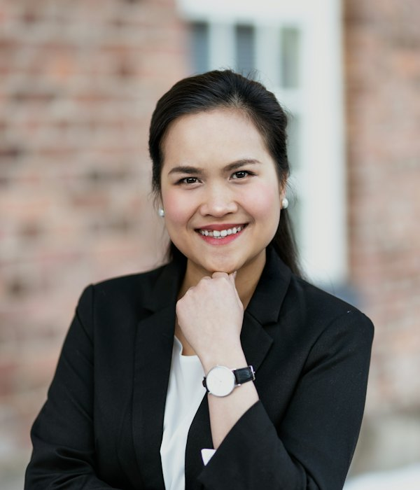

María Fernanda Castillo
PresidentaAbogada con 15 años de experiencia en derechos de la mujer y gestión social.
La Fundación Atenea es una fundación piurana creada para estar al lado de quienes atraviesan sus momentos más difíciles: una enfermedad sin recursos para tratarla, una situación de violencia, el abandono o la pobreza.
Como el mosaico de nuestro logo, creemos que cada persona que ayudamos, cada voluntaria y cada aliado suman color a una misma causa: que nadie enfrente sola lo que puede enfrentarse acompañada.
Brindar apoyo, acompañamiento y oportunidades a personas enfermas, mujeres y familias en situación de vulnerabilidad en Piura.
Ser la fundación referente del norte del Perú en asistencia social cercana, transparente y con impacto medible.

“Creamos Atenea porque vimos de cerca a mujeres y familias enfrentando solas la enfermedad y la violencia. Nuestro compromiso es simple: estar presentes, actuar con seriedad y rendir cuentas de cada sol que se nos confía.”
María Fernanda Castillo
Presidenta del Consejo de Administración
Un equipo multidisciplinario comprometido con Piura, acompañado por un Consejo de Administración y una red de voluntarios.
Abogada con 15 años de experiencia en derechos de la mujer y gestión social.
Gestora social especializada en proyectos de salud comunitaria.
Abogado colegiado en Piura, especialista en derecho de familia.
Psicóloga clínica con experiencia en atención a víctimas de violencia.
Articula la red de voluntarios universitarios y profesionales.
Periodista a cargo de la difusión y relación con aliados.
Somos una fundación constituida e inscrita conforme a la ley peruana. Así convertimos cada aporte en ayuda real.
Fundación constituida por escritura pública, inscrita en SUNARP y en el registro del Consejo de Supervigilancia de Fundaciones.
Trabajamos con universidades, profesionales voluntarios, empresas e instituciones de Piura.
Campañas de salud, entrega de ayuda humanitaria y orientación gratuita para mujeres y familias.
Publicamos resultados, personas atendidas y estados financieros en esta web.
Nuestro trabajo contribuye a los compromisos globales de las Naciones Unidas.
Instituciones que confían en nuestro trabajo y suman esfuerzos por Piura.